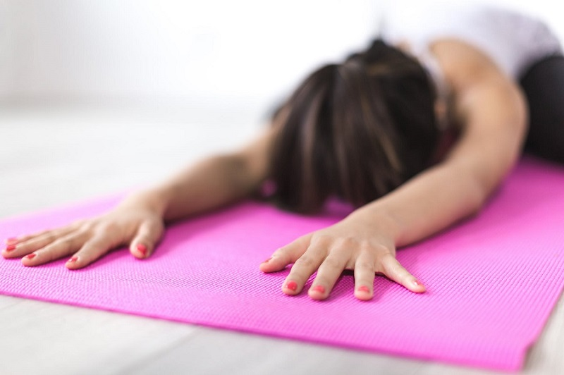

Yoga Unity Recomandă
Worshop pentru Începători
Aceste worshopuri reprezintă cea mai completă introducere în yoga. Sunt ideale pentru oricine dorește să-și aprofundeze practica existentă. Acest curs include explicații și detalierea asanelor de bază (posturi de yoga), pranayama (exerciții de respirație), savasana (relaxare), meditație și include și elemente de filozofie yoghica. La Yoga Unity Center, workshop-ul este predat în grupuri mici (maxim 6 persoane), care se întalnesc săptămânal (timp de 4 săptămâni consecutive) sau în weekend (timp de 2 săptămâni consecutive).
Office Yoga
Clasele de office sunt clase de câte 60 de minute concepute special pentru nevoile persoanelor care lucrează la birou. Cursul se concentrează pe eliberarea stresului, corectarea posturii și ameliorarea durerilor de gât și de spate. La Unity Yoga Center, vă puteți alătura unei clase de yoga de birou în orice zi lucrătoare de la 09:00.


Yoga is the journey of the self, through the self, to the self.
--The Bhagavad Gita